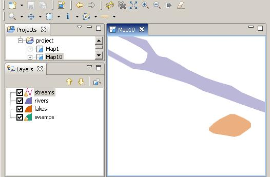
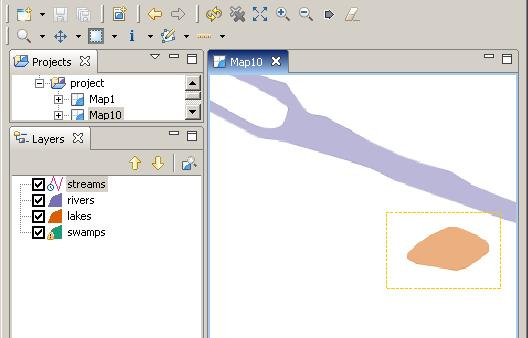
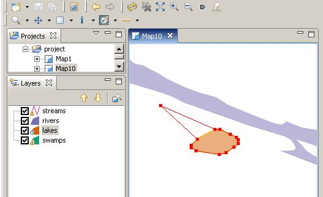

In order to edit a feature, you must have a map open and selected.
- Create a map using the sample lakes information.
- Zoom into a small area of the map.

- Select the layer in the Layers view that you wish to edit
- Using the Select Features by Drawing a Rectangle tool, select a lake. (The selected feature will flash)

- Change to the Feature Edit tool.

- You can use the Feature Edit tool to move points. Move your mouse over a vertex. The cursor will change to four arrows. Click and drag the vertex. Once you release, the feature will be redrawn.

- You can also create new points with the Feature Edit tool. Click on a straight line where there is no vertex. A vertex will appear and it can be moved.
You may also wish to look at the Feature Editor, in order to change attribute information. You can use Delete Feature tool to remove features. Creating new features is done by selecting the Feature Edit tool when there are no features selected and clicking on the map.
(c) Copyright (c) 2004,2005 Refractions Research Inc. and others.